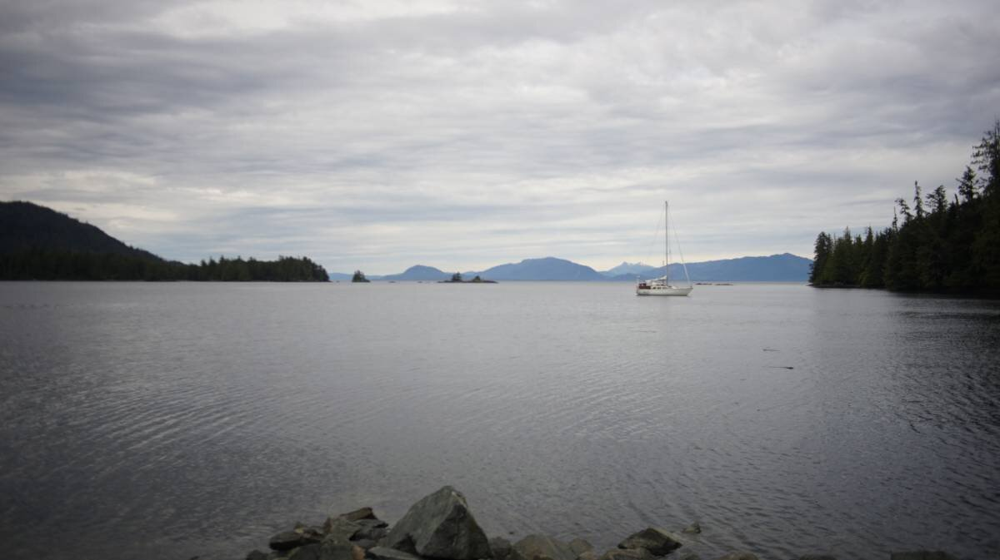
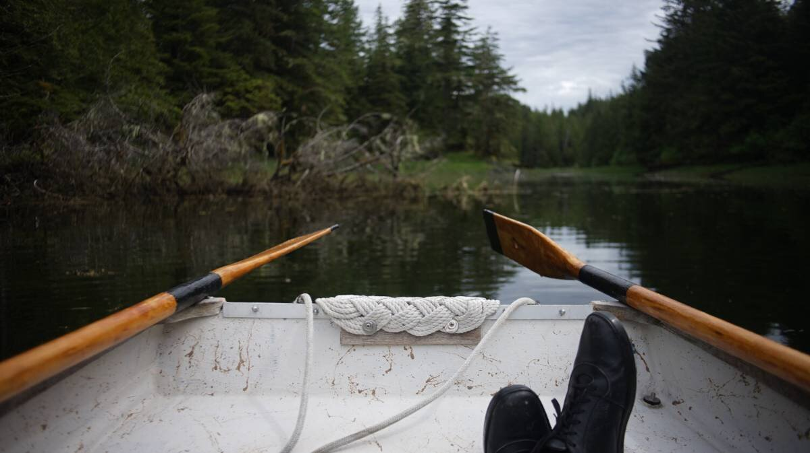
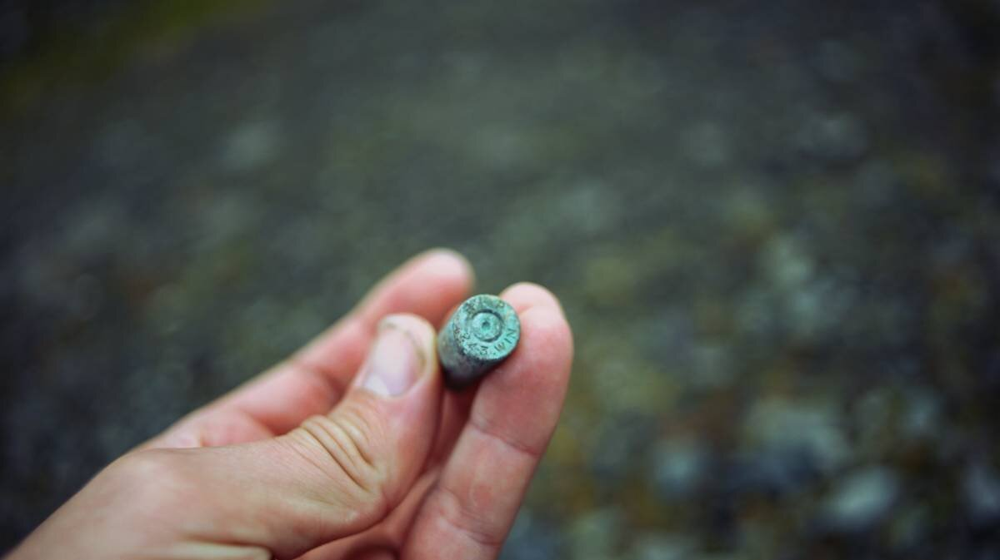

ratz harbor
On June 8th 2024, we left Snug Cove and headed north through Clarence Strait, with plans to anchor in Exchange Cove... but the weather had other plans for us.
The wind was forecast to be variable, but it was supposed to rise out of the SE, so we left and hoped it would turn as we made our way northward.
We experienced a very strange visual phenomenon on this transit... looking ahead, and astern of us, the mountains seemed to float above the water, looking with binoculars, we could also see that the shape of the mountains, and the trees on them, made no sense. It was like looking at glitch art, like the trees and mountains had horizontal speed lines. Eventually, the trees became trees, and the mountains, mountains. We later learned that this type of optical phenomena is called a Fata Morgana.
The southeast wind came too late, we wouldn't make to either Exchange Cove or Coffman Cove before the tide turned, so we instead chose to anchor in Ratz Harbor, halfway up the east side of Prince of Wales Island. Although, we only stayed for a few hours...
We dropped anchor in the south part of the harbor, because the wind had picked up out of the south east (we even had williwaws for a while). The forecast also said that the wind would stay in the south. The south part of Ratz Harbor is deeper than the anchorage in the north(sailors anchor there when there is wind from the north). We set our anchor in 65 ft(high tide) of water. The bottom appeared to have very good holding, our anchor caught well.
The wind kept us in good alignment, it seemed like a fine place to spend the night. So confident we were that Devine even put the dinghy in the water and went ashore to explore. Devine found old bullet casings(winchester .243) while walking ashore, but was disappointed to find that this spot wasn't very wild at all, a road lay nearby.
Devine returned aboard, we worked on our respective projects until... until we noticed that our position at anchor had changed. The anchor was still buried in the mud where we had dropped it, that wasn't the problem, but we had swung around and now were facing toward the opening to the bay. Also, we could feel Pino bouncing lightly with wind waves... something was happening. We went outside and saw that the wind was coming in from the opening, the wind had decided to switch to the north. We hoisted the dinghy back on deck, as we did this the wind began to increase... putting us stern to shore. Our anchor was set well, but we were afraid that the weather would increase.
We began lifting the anchor, with plans to leave this accursed bay, but our fear were realized because the weather did increase. Retrieving a 15 kg(33 lbs) anchor along with 100 ft of chain and 100 ft of rope rode, is not easy in conditions like this. We don't have a windlass aboard, to find out how we retrieved the anchor without one, see no windlass, we describe the process at length.
Once the anchor was out, Rek finished pulling the remaining 50 feet up by hand. It's not a short process, and it is quite hard on the body, but it is possible, we secured the anchor and got the fuck out the anchorage.
We knew we could anchor in the northern portion, but we weren't sure if the wind was going to stay in that direction, we didn't want to have to do another emergency anchor rode hauling again... not so soon. Because the wind was coming out of the north, and that the tide was running south, we decided it best to return to Snug Cove, even if it meant losing 15 NM of progress.
Ratz Harbor might be a fine place to stop if you understand the weather of the area well, but if you're new to the area, like us, and that the weather isn't completely calm, skip it and save yourself some pain. The holding was good in the southern portion of the bay, even if the water is deep. We are glad we decided to leave, because the wind stayed in the north all night, and again the same day(even if the forecast called for south winds on that day too...).